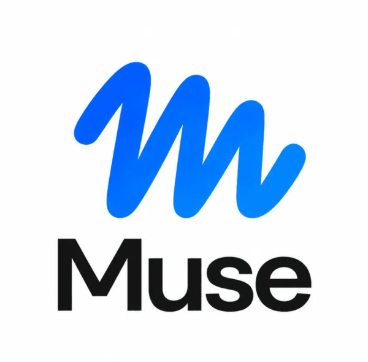

后台要有人
发信息给大家
点按钮、跟进
开场 · 12:00 – 12:20PM
2026-10-18 · 12PM – 4PM · Adrian Ng × Jason Thow


主讲讲师
教中小企业用 AI Agent
网络 IP：阿理哥（Aligor）
合作讲师
J & J Group 合伙人（Partner）
AI Agent，就是用来处理那些你知道必须做好，却不想一直亲手重复做的事情。

ChatGPT Codex ＋ Hermes Agent
安装、建立项目、修改文件
长期工作、连接手机、累积 Skill